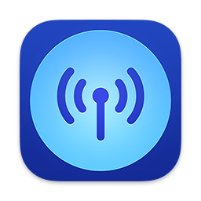

With Broadcasts, you can play streaming radio from around the globe. Add some stations to your library to get started.

If what you're looking for is not covered here, feel free to reach out to support.
See also: Playing Stations, Adding from the Station Browser